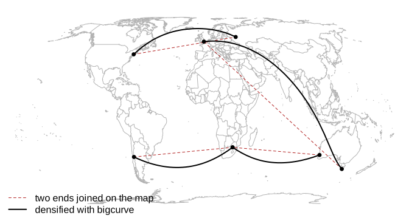
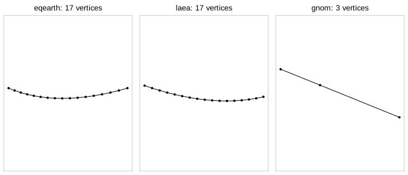
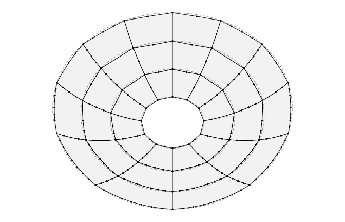

A line between two points on the Earth is a great circle arc. Draw it on a flat map by joining its two ends and you draw the wrong line. bigcurve adds the vertices a line needs to keep its true shape in a given map projection: more where the projection bends it, none where it doesn’t.

The method is the adaptive resampling Mike Bostock wrote for d3-geo, with projections from PROJ. The error is measured where it matters: in the plane of the map you are going to draw.
Installation
Once bigcurve is on CRAN:
install.packages("bigcurve")The development version is on r-universe:
install.packages("bigcurve",
repos = c("https://hypertidy.r-universe.dev", "https://cloud.r-project.org"))Building from source needs the PROJ library, version 8 or later (libproj-dev on Debian and Ubuntu, proj-devel on Fedora, proj from Homebrew); Rtools on Windows has PROJ built in.
Quick start
densify() takes longitude, latitude coordinates and a target projection, and returns longitude, latitude coordinates with the new vertices in place. segment() makes a two point line to play with.
library(bigcurve)
hobart_london <- segment(c(147.3, -0.1), c(-42.9, 51.5))
hobart_london
#> x y
#> [1,] 147.3 -42.9
#> [2,] -0.1 51.5
d <- densify(hobart_london, "+proj=eqearth")
nrow(d)
#> [1] 34
head(d)
#> [,1] [,2]
#> [1,] 147.3000 -42.90000
#> [2,] 141.9246 -40.12072
#> [3,] 136.9878 -37.11298
#> [4,] 132.4395 -33.91654
#> [5,] 128.2278 -30.56523
#> [6,] 113.8000 -16.11857The output is still in longitude and latitude, so any tool can project it. rproj_xy() projects a coordinate matrix with PROJ:
Adaptive: the projection decides
The same line needs a different number of vertices in each projection, because it is a different curve on each map. Where a projection draws a great circle as a straight line it needs no new vertices at all: in a gnomonic projection every great circle is straight.
projections <- c(eqearth = "+proj=eqearth",
laea = "+proj=laea +lon_0=70 +lat_0=10",
gnom = "+proj=gnom +lon_0=100 +lat_0=0")
s <- segment(c(100, 160), c(-35, -35))
op <- par(mfrow = c(1, 3), mar = c(0.5, 0.5, 2, 0.5))
for (p in names(projections)) {
d <- densify(s, projections[[p]])
xy <- rproj_xy(d, projections[[p]])
plot(xy, type = "l", asp = 1, axes = FALSE, xlab = "", ylab = "")
points(xy, pch = 19, cex = 0.6)
box(col = "grey80")
title(sprintf("%s: %d vertices", p, nrow(d)), font.main = 1)
}
par(op)
Tolerance
tolerance is how far, in the map’s own units (usually metres), the drawn chords may stray from the true curve. The default is one part in 2048 of the projected extent, about a pixel on a large plot; set it directly for anything else.
sapply(c(100000, 10000, 1000, 100), function(tol)
nrow(densify(hobart_london, "+proj=eqearth", tolerance = tol)))
#> [1] 10 26 86 257A tenfold tighter tolerance costs about three times the vertices (the square root of ten), because the error of a chord falls with the square of its length.
Inputs
densify() accepts
- a two column matrix (one path),
- a list of matrices (several paths),
- a segment mesh in the rgl
mesh3dstyle (vbvertices,issegment index pairs), - a wkpool vertex pool, and so any geometry that wk can read (sf, geos, s2, WKB, WKT) after
wkpool::establish_topology().
A pool comes back as a pool, keeping its crs, its feature and path provenance, and its existing vertex ids, with new ids for the added vertices.
Graticules and shared boundaries
A grid is the classic case. Each cell edge runs between two corners, so it is a great circle arc, and on a polar map nearly every one of them bends. An edge shared by two neighbouring cells gets exactly the same new vertices from both sides, so the cells still fit together after densifying.
lon <- seq(-180, 150, by = 30)
lat <- seq(-75, -45, by = 15)
cells <- expand.grid(x = lon, y = lat)
wkt <- sprintf("POLYGON ((%s %s, %s %s, %s %s, %s %s, %s %s))",
cells$x, cells$y, cells$x + 30, cells$y, cells$x + 30, cells$y + 15,
cells$x, cells$y + 15, cells$x, cells$y)
pool <- wkpool::establish_topology(wk::wkt(wkt, crs = "OGC:CRS84"))
prj <- "+proj=laea +lon_0=0 +lat_0=-90"
out <- densify(pool, prj)
c(input = nrow(wkpool::pool_vertices(pool)),
densified = nrow(wkpool::pool_vertices(out)))
#> input densified
#> 180 360Each cell was densified on its own, yet merging coincident vertices afterwards gives exactly the vertices you get by merging first and densifying the shared edges once. The twins agree to the last bit:
merged_after <- wkpool::pool_vertices(wkpool::merge_coincident(out))
merged_first <- wkpool::pool_vertices(densify(wkpool::merge_coincident(pool), prj))
nrow(merged_after)
#> [1] 184
identical(sort(complex(real = merged_after$x, imaginary = merged_after$y)),
sort(complex(real = merged_first$x, imaginary = merged_first$y)))
#> [1] TRUETo draw it, turn the pool back into geometry and project with wk and PROJ, the fast general path for wk geometry:
geom <- wkpool::cycles_to_wkb(wkpool::merge_coincident(out))
drawn <- wk::wk_transform(geom, PROJ::proj_trans_create(wk::wk_crs(geom), prj))
xy <- wk::wk_coords(drawn)
op <- par(mar = rep(0.5, 4))
plot(range(xy$x), range(xy$y), type = "n", asp = 1, axes = FALSE, xlab = "", ylab = "")
plot(drawn, add = TRUE, col = "grey95")
points(xy$x, xy$y, pch = 19, cex = 0.3)
par(op)
The edges of the map
- Points that can’t be projected never error. A segment with an end beyond the horizon of an orthographic map, say, is left as it is. Clipping is a job for another package.
-
The antimeridian. bigcurve keeps whatever longitudes you give it. An edge written from 170 to -170 refines continuously through 180, and an edge along 180 stays at 180. To join the two sides of the seam into one boundary, densify first and then use
wkpool::merge_coincident(period_x = 360). - A sphere, not an ellipsoid. New vertices are great circle midpoints on a sphere, as in s2 and d3-geo. For drawing a map the difference is invisible.
bigcurve and s2
s2 and bigcurve agree that an edge between two longitude, latitude points is a great circle arc. s2 works out what a shape is on the sphere (intersections, areas, distances); bigcurve draws that shape in any map projection with just enough vertices. The vignette walks through the difference and shows them working together: vignette("bigcurve-and-s2", package = "bigcurve").
How it works
For each segment, bigcurve projects the great circle midpoint and measures how far it lands from the straight chord between the projected ends. If that is more than tolerance, or the midpoint lands well off the middle of the chord, the segment is split in two and each half is checked the same way, down to max_depth levels. Arcs longer than 30 degrees always split, since a long arc can curve away and back and fool the midpoint test.
The engine is a small header-only C++ file (src/bigcurve.h) with no R or PROJ in it; the transform is plugged in from outside. It follows d3-geo’s resampleLineTo, and carries d3-geo’s ISC notice in inst/COPYRIGHTS. Mike Bostock’s write-up of the idea is at https://bost.ocks.org/mike/example/.
Code of Conduct
Please note that the bigcurve project is released with a Contributor Code of Conduct. By contributing to this project, you agree to abide by its terms.